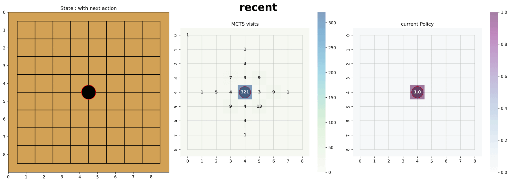

AiGO: CV·로보틱스 기반 오목 AI
1. 🔗 프로젝트 개요 & 링크
4축 로봇팔 (로봇) - 바둑판 인식(CV) - 알파제로 기반 오목 에이전트(RL)를 개발해 시스템화시켰다.
2. ✨ 핵심 역량 & 문제 해결
역할: 리더 · 강화시스터즈(24-2)
알파제로 핵심 구현 · 로보틱스 · Web
- 알파제로를 도입해 베이스라인을 초과하는 성능을 유일하게 달성해 프로젝트의 성과와 완성도를 높이는 데 주도적인 역할을 했습니다.
- 아두이노 제어를 위한 프로젝트에 최적화된 동작 라이브러리를 개발했고, Python <-> Arduino 시리얼 통신을 구현했습니다.
- 학기 초부터 로봇을 제작을 병행해 동아리원들의 CV와 AI 작업 이전에 끝내고자 노력했습니다.
- 전체 시스템 구조를 짜고 부분부분을 효과적으로 팀원들과 나누며 작업했습니다.
3. ⚙️ 개발 과정
- 알파제로 논문을 공부해 팀원들의 이해를 증진시켰고, 로봇 개발 과정을 담았습니다.
4. 📊 결과 & 성과
- 베이스라인: 방어를 배우는 것이 보여야 합니다. (ex. 연속 3개가 완성되었을 때 방어해야 합니다.)
- (오목 AI) 데이터 증강, 다양한 신경망 구조, 노이즈 기반 탐험을 통해 성능을 개선해 9×9 환경에서 평균 25스텝 이상의 플레이를 달성했습니다.
- 평균 25 스텝 이상의 결과에서 기초적인(낮은 스텝에서의) 방어전략과 중앙먹기 전략을 파악할 수 있었습니다.
- (로봇 제어) 서보 모터를 원하는 동작대로 신호를 보내는 것은 성공하였으나, 로봇팔의 안정성이 심하게 낮아 움직임 오차가 심해 바둑을 둘 정도로 세밀한 동작은 수행할 수 없었습니다.


5. 💡 배운 점 & 다음 단계
- CV-AI-로봇을 총괄하는 구조를 디자인하고 구성들이 하나가 되어 움직이는 시스템을 구성하고 돌아가는 것을 보는 게 보람찼습니다. 또한 배경지식조차 없었던 학문을 공부해보며 효과적으로 질문하는 방법과 새로운 정보를 받아들이는 방법을 배울 수 있었습니다.
- 알파제로 구현 난이도가 높아 논문을 완전히 소화한 후 구현까지 시간이 많이 소요되었습니다. 9x9로 제한을 걸었음에도 불구하고 학습 시간이 과도하게 오래 걸려 다양한 최적화 전략을 수행해보지 못한 것이 아쉬웠습니다.
- 다른 게임과 달리, 승패가 갈리기 전까지 결과 및 보상을 알 수 없기 때문에 학습이 되고 있는지 판단하는 것이 어려웠습니다. 리플레이 메모리와 효과적인 시각화로 문제를 보완했습니다.
- 로봇에 대한 사전지식이 없다보니, 로봇팔의 불안정성을 미리 생각하지 못했습니다. 레퍼런스를 찾아보며 석션으로 end-effector을 바꾸었음에도 구조적인 유격을 해결하지 못했습니다. 이 부분은 온폴리쉬 RL을 사용해 오차를 잡아보면 좋겠다고 생각했습니다.
AiGO: End-to-End AI for Gomoku with Vision and Robotics
1. 🔗 Overview & Links
Built an end-to-end system that combines a 4-axis robotic arm, Gomoku board perception, and an AlphaZero-inspired agent so humans can challenge the AI on a physical board.
2. ✨ Core Strengths & Problem Solving
Role: Team Lead
Implemented AlphaZero core loop · Robotics integration · Web interface
- Introduced AlphaZero to surpass the baseline policy, driving the project’s performance and overall polish.
- Authored a tailored motion library for Arduino control and implemented the Python ↔ Arduino serial bridge.
- Balanced hardware fabrication alongside CV/AI work so the robot was ready early for teamwide integration.
- Designed the system architecture and coordinated responsibilities across robotics, perception, and training.
3. ⚙️ Development Process
- Studied the AlphaZero paper in depth to align the team, and documented the robotics build from prototype to control software.
01
Building the Gomoku Robot
Constructed the arm used for Gomoku; later swapped the end-effector to suction.
02
Circuitry & Control Code
Reworked the robot arm circuitry and authored the motion control classes.
4. 📊 Results & Outcomes
- Baseline expectation: the agent must demonstrate defensive behavior (e.g., blocking open fours).
- Through augmentation, diverse CNN architectures, and noise-driven exploration, the Gomoku agent achieved an average of 25+ moves per game on a 9×9 board.
- At the 25-step benchmark we could observe foundational defense patterns and center-first strategies emerging.
- Robotics: while servo commands executed as intended, mechanical instability in the arm still caused positional error, preventing full board-level precision.
5. 💡 Learnings & Next Steps
- Orchestrating CV, AI, and robotics into a cohesive pipeline was rewarding; picking up unfamiliar domains taught me how to ask sharper questions and digest new material quickly.
- Fully digesting AlphaZero and implementing it took significant time, and training—even at 9×9—remained slow, limiting how many optimization ideas we could test.
- Unlike many games, Gomoku offers no intermediate rewards, making progress tracking difficult. Replay memory and richer visualizations helped us evaluate training quality.
- With zero robotics background, we underestimated the arm’s mechanical slack. Even after switching to a suction end-effector, structural play persisted; exploring on-policy RL for fine-grained correction is a promising next step.